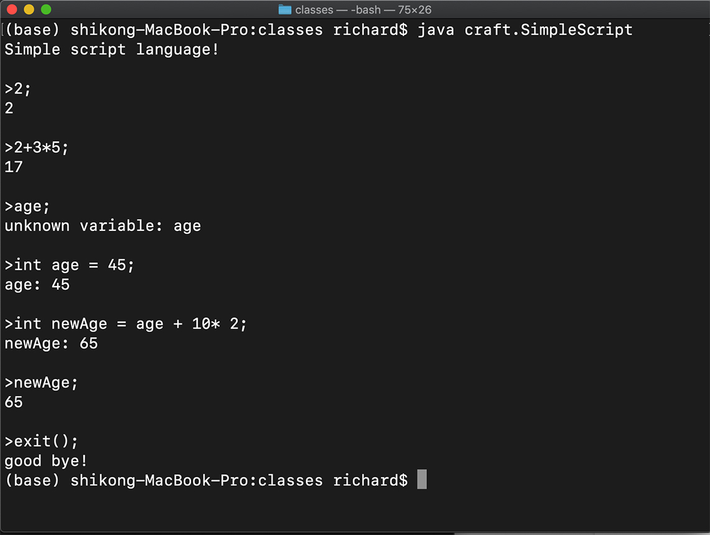

- 00 开篇词 为什么你要学习编译原理？.md.html
- 01 理解代码：编译器的前端技术.md.html
- 02 正则文法和有限自动机：纯手工打造词法分析器.md.html
- 03 语法分析（一）：纯手工打造公式计算器.md.html
- 04 语法分析（二）：解决二元表达式中的难点.md.html
- 05 语法分析（三）：实现一门简单的脚本语言.md.html
- 06 编译器前端工具（一）：用Antlr生成词法、语法分析器.md.html
- 07 编译器前端工具（二）：用Antlr重构脚本语言.md.html
- 08 作用域和生存期：实现块作用域和函数.md.html
- 09 面向对象：实现数据和方法的封装.md.html
- 10 闭包： 理解了原理，它就不反直觉了.md.html
- 11 语义分析（上）：如何建立一个完善的类型系统？.md.html
- 12 语义分析（下）：如何做上下文相关情况的处理？.md.html
- 13 继承和多态：面向对象运行期的动态特性.md.html
- 14 前端技术应用（一）：如何透明地支持数据库分库分表？.md.html
- 15 前端技术应用（二）：如何设计一个报表工具？.md.html
- 16 NFA和DFA：如何自己实现一个正则表达式工具？.md.html
- 17 First和Follow集合：用LL算法推演一个实例.md.html
- 18 移进和规约：用LR算法推演一个实例.md.html
- 19 案例总结与热点问题答疑：对于左递归的语法，为什么我的推导不是左递归的？.md.html
- 20 高效运行：编译器的后端技术.md.html
- 21 运行时机制：突破现象看本质，透过语法看运行时.md.html
- 22 生成汇编代码（一）：汇编语言其实不难学.md.html
- 23 生成汇编代码（二）：把脚本编译成可执行文件.md.html
- 24 中间代码：兼容不同的语言和硬件.md.html
- 25 后端技术的重用：LLVM不仅仅让你高效.md.html
- 26 生成IR：实现静态编译的语言.md.html
- 27 代码优化：为什么你的代码比他的更高效？.md.html
- 28 数据流分析：你写的程序，它更懂.md.html
- 29 目标代码的生成和优化（一）：如何适应各种硬件架构？.md.html
- 30 目标代码的生成和优化（二）：如何适应各种硬件架构？.md.html
- 31 内存计算：对海量数据做计算，到底可以有多快？.md.html
- 32 字节码生成：为什么Spring技术很强大？.md.html
- 33 垃圾收集：能否不停下整个世界？.md.html
- 34 运行时优化：即时编译的原理和作用.md.html
- 35 案例总结与热点问题答疑：后端部分真的比前端部分难吗？.md.html
- 36 当前技术的发展趋势以及其对编译技术的影响.md.html
- 37 云编程：云计算会如何改变编程模式？.md.html
- 38 元编程：一边写程序，一边写语言.md.html
- 加餐 汇编代码编程与栈帧管理.md.html
- 用户故事 因为热爱，所以坚持.md.html
- 第二季回归 这次，我们一起实战解析真实世界的编译器.md.html
- 结束语 用程序语言，推动这个世界的演化.md.html
- 捐赠
05 语法分析（三）：实现一门简单的脚本语言
前两节课结束后，我们已经掌握了表达式的解析，并通过一个简单的解释器实现了公式的计算。但这个解释器还是比较简单的，看上去还不大像一门语言。那么如何让它支持更多的功能，更像一门脚本语言呢？本节课，我会带你寻找答案。
我将继续带你实现一些功能，比如：
- 支持变量声明和初始化语句，就像“int age” “int age = 45”和“int age = 17+8+20”；
- 支持赋值语句“age = 45”；
- 在表达式中可以使用变量，例如“age + 10 *2”；
- 实现一个命令行终端，能够读取输入的语句并输出结果。
实现这些功能之后，我们的成果会更像一个脚本解释器。而且在这个过程中，我还会带你巩固语法分析中的递归下降算法，和你一起讨论“回溯”这个特征，让你对递归下降算法的特征理解得更加全面。
不过，为了实现这些新的语法，我们首先要把它们用语法规则描述出来。
增加所需要的语法规则
首先，一门脚本语言是要支持语句的，比如变量声明语句、赋值语句等等。单独一个表达式，也可以视为语句，叫做“表达式语句”。你在终端里输入2+3；，就能回显出5来，这就是表达式作为一个语句在执行。按照我们的语法，无非是在表达式后面多了个分号而已。C语言和Java都会采用分号作为语句结尾的标识，我们也可以这样写。
我们用扩展巴科斯范式（EBNF）写出下面的语法规则：
programm: statement+;
statement
: intDeclaration
| expressionStatement
| assignmentStatement
;
变量声明语句以int开头，后面跟标识符，然后有可选的初始化部分，也就是一个等号和一个表达式，最后再加分号：
intDeclaration : 'int' Id ( '=' additiveExpression)? ';';
表达式语句目前只支持加法表达式，未来可以加其他的表达式，比如条件表达式，它后面同样加分号：
expressionStatement : additiveExpression ';';
赋值语句是标识符后面跟着等号和一个表达式，再加分号：
assignmentStatement : Identifier '=' additiveExpression ';';
为了在表达式中可以使用变量，我们还需要把primaryExpression改写，除了包含整型字面量以外，还要包含标识符和用括号括起来的表达式：
primaryExpression : Identifier| IntLiteral | '(' additiveExpression ')';
这样，我们就把想实现的语法特性，都用语法规则表达出来了。接下来，我们就一步一步实现这些特性。
让脚本语言支持变量
之前实现的公式计算器只支持了数字字面量的运算，如果能在表达式中用上变量，会更有用，比如能够执行下面两句：
int age = 45;
age + 10 * 2;
这两个语句里面的语法特性包含了变量声明、给变量赋值，以及在表达式里引用变量。为了给变量赋值，我们必须在脚本语言的解释器中开辟一个存储区，记录不同的变量和它们的值：
private HashMap<String, Integer> variables = new HashMap<String, Integer>();
我们简单地用了一个HashMap作为变量存储区。在变量声明语句和赋值语句里，都可以修改这个变量存储区中的数据，而获取变量值可以采用下面的代码：
if (variables.containsKey(varName)) {
Integer value = variables.get(varName); //获取变量值
if (value != null) {
result = value; //设置返回值
} else { //有这个变量，没有值
throw new Exception("variable " + varName + " has not been set any value");
}
}
else{ //没有这个变量。
throw new Exception("unknown variable: " + varName);
}
通过这样的一个简单的存储机制，我们就能支持变量了。当然，这个存储机制可能过于简单了，我们后面讲到作用域的时候，这么简单的存储机制根本不够。不过目前我们先这么用着，以后再考虑改进它。
解析赋值语句
接下来，我们来解析赋值语句，例如“age = age + 10 * 2；”：
private SimpleASTNode assignmentStatement(TokenReader tokens) throws Exception {
SimpleASTNode node = null;
Token token = tokens.peek(); //预读，看看下面是不是标识符
if (token != null && token.getType() == TokenType.Identifier) {
token = tokens.read(); //读入标识符
node = new SimpleASTNode(ASTNodeType.AssignmentStmt, token.getText());
token = tokens.peek(); //预读，看看下面是不是等号
if (token != null && token.getType() == TokenType.Assignment) {
tokens.read(); //取出等号
SimpleASTNode child = additive(tokens);
if (child == null) { //出错，等号右面没有一个合法的表达式
throw new Exception("invalide assignment statement, expecting an expression");
}
else{
node.addChild(child); //添加子节点
token = tokens.peek(); //预读，看看后面是不是分号
if (token != null && token.getType() == TokenType.SemiColon) {
tokens.read(); //消耗掉这个分号
} else { //报错，缺少分号
throw new Exception("invalid statement, expecting semicolon");
}
}
}
else {
tokens.unread(); //回溯，吐出之前消化掉的标识符
node = null;
}
}
return node;
}
为了方便你理解，我来解读一下上面这段代码的逻辑：
我们既然想要匹配一个赋值语句，那么首先应该看看第一个Token是不是标识符。如果不是，那么就返回null，匹配失败。如果第一个Token确实是标识符，我们就把它消耗掉，接着看后面跟着的是不是等号。如果不是等号，那证明我们这个不是一个赋值语句，可能是一个表达式什么的。那么我们就要回退刚才消耗掉的Token，就像什么都没有发生过一样，并且返回null。回退的时候调用的方法就是unread()。- 如果后面跟着的确实是等号，那么在继续看后面是不是一个表达式，表达式后面跟着的是不是分号。如果不是，就报错就好了。这样就完成了对赋值语句的解析。
利用上面的代码，我们还可以改造一下变量声明语句中对变量初始化的部分，让它在初始化的时候支持表达式，因为这个地方跟赋值语句很像，例如“int newAge = age + 10 * 2；”。
理解递归下降算法中的回溯
不知道你有没有发现，我在设计语法规则的过程中，其实故意设计了一个陷阱，这个陷阱能帮我们更好地理解递归下降算法的一个特点：回溯。理解这个特点能帮助你更清晰地理解递归下降算法的执行过程，从而再去想办法优化它。
考虑一下age = 45；这个语句。肉眼看过去，你马上知道它是个赋值语句，但是当我们用算法去做模式匹配时，就会发生一些特殊的情况。看一下我们对statement语句的定义：
statement
: intDeclaration
| expressionStatement
| assignmentStatement
;
我们首先尝试intDeclaration，但是age = 45；语句不是以int开头的，所以这个尝试会返回null。然后我们接着尝试expressionStatement，看一眼下面的算法：
private SimpleASTNode expressionStatement() throws Exception {
int pos = tokens.getPosition(); //记下初始位置
SimpleASTNode node = additive(); //匹配加法规则
if (node != null) {
Token token = tokens.peek();
if (token != null && token.getType() == TokenType.SemiColon) { //要求一定以分号结尾
tokens.read();
} else {
node = null;
tokens.setPosition(pos); // 回溯
}
}
return node;
}
出现了什么情况呢？age = 45；语句最左边是一个标识符。根据我们的语法规则，标识符是一个合法的addtiveExpresion，因此additive()函数返回一个非空值。接下来，后面应该扫描到一个分号才对，但是显然不是，标识符后面跟的是等号，这证明模式匹配失败。
失败了该怎么办呢？我们的算法一定要把Token流的指针拨回到原来的位置，就像一切都没发生过一样。因为我们不知道addtive()这个函数往下尝试了多少步，因为它可能是一个很复杂的表达式，消耗掉了很多个Token，所以我们必须记下算法开始时候的位置，并在失败时回到这个位置。尝试一个规则不成功之后，恢复到原样，再去尝试另外的规则，这个现象就叫做“回溯”。
因为有可能需要回溯，所以递归下降算法有时会做一些无用功。在assignmentStatement的算法中，我们就通过unread()，回溯了一个Token。而在expressionStatement中，我们不确定要回溯几步，只好提前记下初始位置。匹配expressionStatement失败后，算法去尝试匹配assignmentStatement。这次获得了成功。
试探和回溯的过程，是递归下降算法的一个典型特征。通过上面的例子，你应该对这个典型特征有了更清晰的理解。递归下降算法虽然简单，但它通过试探和回溯，却总是可以把正确的语法匹配出来，这就是它的强大之处。当然，缺点是回溯会拉低一点儿效率。但我们可以在这个基础上进行改进和优化，实现带有预测分析的递归下降，以及非递归的预测分析。有了对递归下降算法的清晰理解，我们去学习其他的语法分析算法的时候，也会理解得更快。
我们接着再讲回溯牵扯出的另一个问题：什么时候该回溯，什么时候该提示语法错误？
大家在阅读示例代码的过程中，应该发现里面有一些错误处理的代码，并抛出了异常。比如在赋值语句中，如果等号后面没有成功匹配一个加法表达式，我们认为这个语法是错的。因为在我们的语法中，等号后面只能跟表达式，没有别的可能性。
token = tokens.read(); //读出等号
node = additive(); //匹配一个加法表达式
if (node == null) {
//等号右边一定需要有另一个表达式
throw new Exception("invalide assignment expression, expecting an additive expression");
}
你可能会意识到一个问题，当我们在算法中匹配不成功的时候，我们前面说的是应该回溯呀，应该再去尝试其他可能性呀，为什么在这里报错了呢？换句话说，什么时候该回溯，什么时候该提示这里发生了语法错误呢？
其实这两种方法最后的结果是一样的。我们提示语法错误的时候，是说我们知道已经没有其他可能的匹配选项了，不需要浪费时间去回溯。就比如，在我们的语法中，等号后面必然跟表达式，否则就一定是语法错误。你在这里不报语法错误，等试探完其他所有选项后，还是需要报语法错误。所以说，提前报语法错误，实际上是我们写算法时的一种优化。
在写编译程序的时候，我们不仅仅要能够解析正确的语法，还要尽可能针对语法错误提供友好的提示，帮助用户迅速定位错误。错误定位越是准确、提示越是友好，我们就越喜欢它。
好了，到目前为止，已经能够能够处理几种不同的语句，如变量声明语句，赋值语句、表达式语句，那么我们把所有这些成果放到一起，来体会一下使用自己的脚本语言的乐趣吧！
我们需要一个交互式的界面来输入程序，并执行程序，这个交互式的界面就叫做REPL。
实现一个简单的REPL
脚本语言一般都会提供一个命令行窗口，让你输入一条一条的语句，马上解释执行它，并得到输出结果，比如Node.js、Python等都提供了这样的界面。这个输入、执行、打印的循环过程就叫做REPL（Read-Eval-Print Loop）。你可以在REPL中迅速试验各种语句，REPL即时反馈的特征会让你乐趣无穷。所以，即使是非常资深的程序员，也会经常用REPL来验证自己的一些思路，它相当于一个语言的PlayGround（游戏场），是个必不可少的工具。
在SimpleScript.java中，我们也实现了一个简单的REPL。基本上就是从终端一行行的读入代码，当遇到分号的时候，就解释执行，代码如下：
SimpleParser parser = new SimpleParser();
SimpleScript script = new SimpleScript();
BufferedReader reader = new BufferedReader(new InputStreamReader(System.in)); //从终端获取输入
String scriptText = "";
System.out.print("\n>"); //提示符
while (true) { //无限循环
try {
String line = reader.readLine().trim(); //读入一行
if (line.equals("exit();")) { //硬编码退出条件
System.out.println("good bye!");
break;
}
scriptText += line + "\n";
if (line.endsWith(";")) { //如果没有遇到分号的话，会再读一行
ASTNode tree = parser.parse(scriptText); //语法解析
if (verbose) {
parser.dumpAST(tree, "");
}
script.evaluate(tree, ""); //对AST求值，并打印
System.out.print("\n>"); //显示一个提示符
scriptText = "";
}
} catch (Exception e) { //如果发现语法错误，报错，然后可以继续执行
System.out.println(e.getLocalizedMessage());
System.out.print("\n>"); //提示符
scriptText = "";
}
}
运行java craft.SimpleScript，你就可以在终端里尝试各种语句了。如果是正确的语句，系统马上会反馈回结果。如果是错误的语句，REPL还能反馈回错误信息，并且能够继续处理下面的语句。我们前面添加的处理语法错误的代码，现在起到了作用！下面是在我电脑上的运行情况：

如果你用java craft.SimpleScript -v启动REPL，则进入Verbose模式，它还会每次打印出AST，你可以尝试一下。
退出REPL需要在终端输入ctl+c，或者调用exit()函数。我们目前的解释器并没有支持函数，所以我们是在REPL里硬编码来实现exit()函数的。后面的课程里，我会带你真正地实现函数特性。
我希望你能编译一下这个程序，好好的玩一玩它，然后再修改一下源代码，增加一些你感兴趣的特性。我们学习跟打游戏一样，好玩、有趣才能驱动我们不停地学下去，一步步升级打怪。我个人觉得，我们作为软件工程师，拿出一些时间来写点儿有趣的东西作为消遣，乐趣和成就感也是很高的，况且还能提高水平。
课程小结
本节课我们通过对三种语句的支持，实现了一个简单的脚本语言。REPL运行代码的时候，你会有一种真真实实的感觉，这确实是一门脚本语言了，虽然它没做性能的优化，但你运行的时候也还觉得挺流畅。
学完这讲以后，你也能找到了一点感觉：Shell脚本也好，PHP也好，JavaScript也好，Python也好，其实都可以这样写出来。
回顾过去几讲，你已经可以分析词法、语法、进行计算，还解决了左递归、优先级、结合性的问题。甚至，你还能处理语法错误，让脚本解释器不会因为输入错误而崩溃。
想必这个时候你已经开始相信我的承诺了：每个人都可以写一个编译器。这其实也是我最想达到的效果。相信自己，只要你不给自己设限，不设置玻璃天花板，其实你能够做出很多让自己惊讶、让自己骄傲的成就。
收获对自己的信心，掌握编译技术，将是你学习这门课程后最大的收获！
一课一思
本节课，我们设计了一个可能导致递归下降算法中回溯的情景。在你的计算机语言中，有哪些语法在运用递归下降算法的时候，也是会导致回溯的？
如果你还想进一步挑战自己，可以琢磨一下，递归下降算法的回溯，会导致多少计算时间的浪费？跟代码长度是线性关系还是指数关系？我们在后面梳理算法的时候，会涉及到这个问题。
欢迎在留言区里分享你的发现，与大家一起讨论。最后，感谢你的阅读，如果这篇文章让你有所收获，也欢迎你将它分享给更多的朋友。
另外，第2讲到第5讲的代码，都在代码库中的lab子目录的craft子目录下，代码库在码云和GitHub上都有，希望你能下载玩一玩。
© 2019 - 2023 Liangliang Lee. Powered by gin and hexo-theme-book.